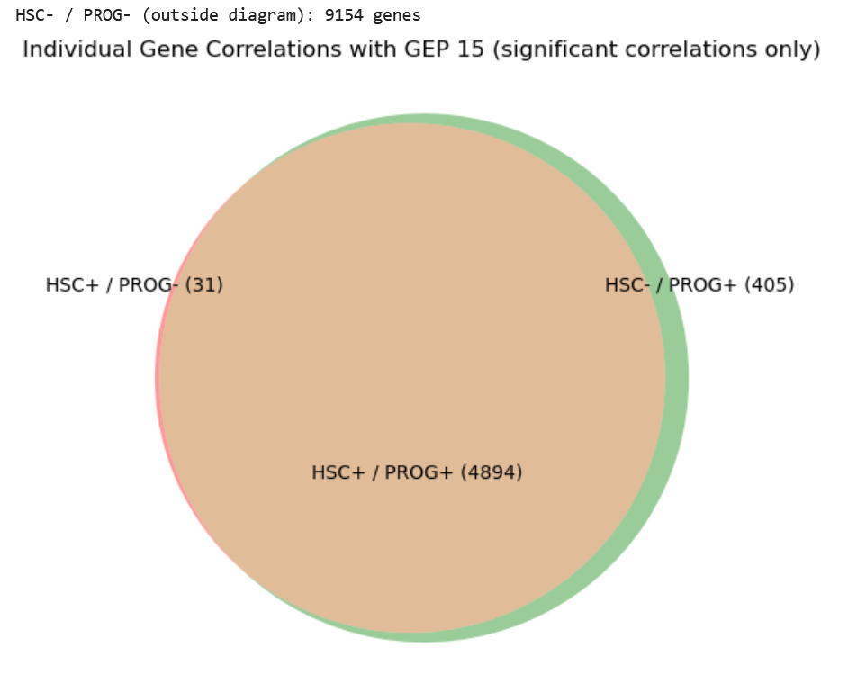
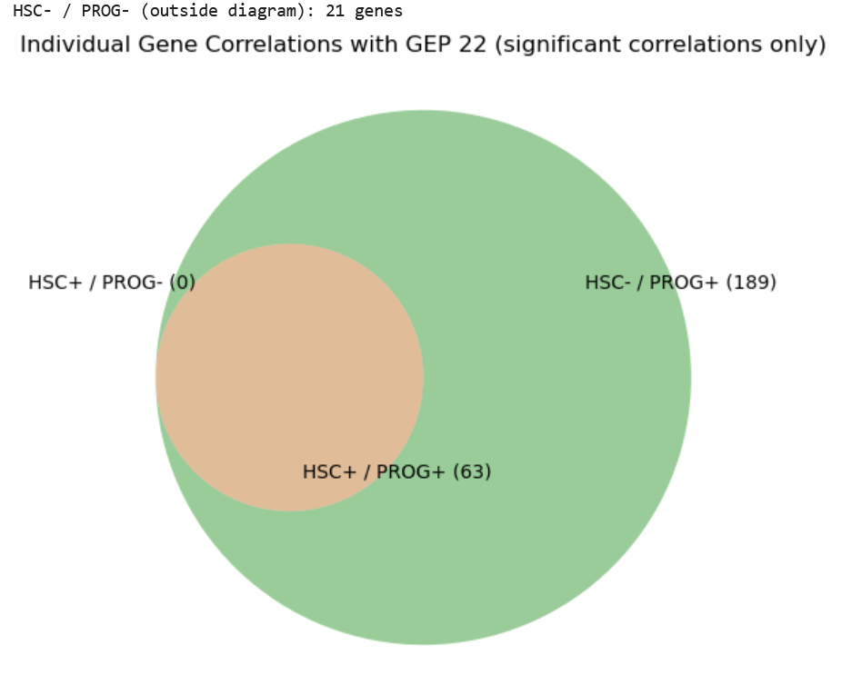

Only includes genes with significant correlations with GEP 15 and 22 respectively among both HSCs and progenitors (alpha=0.05).
We start off with the gene by GEP matrix and cell by GEP matrix. Then for each gene, we calculated the correlation between that gene and a GEP (correlations separated between HSCs and progenitors).
TLDR: We found correlation between each gene and a GEP (separated by HSCs and progenitors).
Below we have scatter plots where x axis is the correlation, and y axis is GEP expression.
GEP 15 Expression in genes vs. Gene correlation with GEP 15 (among HSCs only)
GEP 15 Expression in genes vs. Gene correlation with GEP 15 (among progenitors only)
GEP 22 Expression in genes vs. Gene correlation with GEP 22 (among HSCs only)
GEP 22 Expression in genes vs. Gene correlation with GEP 22 (among progenitors only)
Individual gene correlations with GEP 15 (among HSCs and progenitors separately)
Individual gene correlations with GEP 22 (among HSCs and progenitors separately)
Venn diagrams showing the sign (positive or negative) of gene correlations with GEPs among HSCs and progenitors
GEP 15 Correlation Venn Diagram
for Hojun, list of 31 significant genes which are positively correlated with GEP 15 among HSCs, but negatively correlated with GEP 15 among progenitors.
GEP 22 Correlation Venn Diagram
